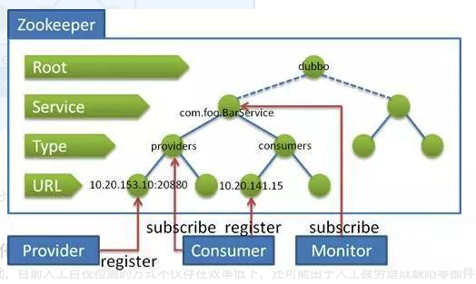
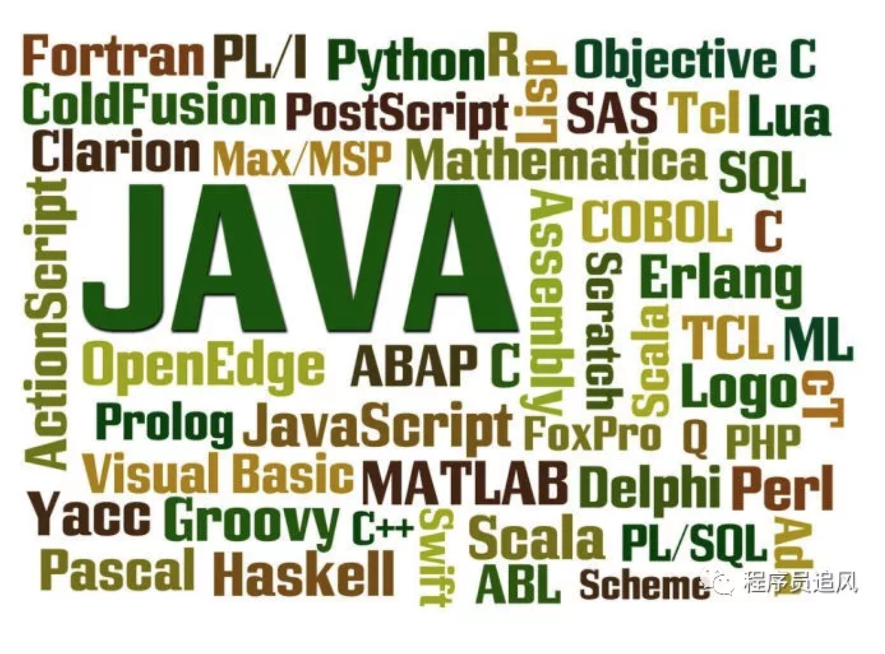

ZooKeeper 是什么？
ZooKeeper 是一个开源的分布式协调服务。它是一个为分布式应用提供一致性服务的软件，分布式应用程序可以基于 Zookeeper 实现诸如数据发布/订阅、负载均衡、命名服务、分布式协调/通知、集群管理、Master 选举、分布式锁和分布式队列等功能。
ZooKeeper 的目标就是封装好复杂易出错的关键服务，将简单易用的接口和性能高效、功能稳定的系统提供给用户。
Zookeeper 保证了如下分布式一致性特性：
（1）顺序一致性
（2）原子性
（3）单一视图
（4）可靠性
（5）实时性（最终一致性）
客户端的读请求可以被集群中的任意一台机器处理，如果读请求在节点上注册了监听器，这个监听器也是由所连接的 zookeeper 机器来处理。对于写请求，这些请求会同时发给其他 zookeeper 机器并且达成一致后，请求才会返回成功。因此，随着 zookeeper 的集群机器增多，读请求的吞吐会提高但是写请求的吞吐会下降。
有序性是 zookeeper 中非常重要的一个特性，所有的更新都是全局有序的，每个更新都有一个唯一的时间戳，这个时间戳称为 zxid（Zookeeper Transaction Id）。而读请求只会相对于更新有序，也就是读请求的返回结果中会带有这个zookeeper 最新的 zxid。
ZooKeeper 提供了什么？
文件系统
通知机制
Zookeeper 文件系统
Zookeeper 提供一个多层级的节点命名空间（节点称为 znode）。与文件系统不同的是，这些节点都可以设置关联的数据，而文件系统中只有文件节点可以存放数据而目录节点不行。
Zookeeper 为了保证高吞吐和低延迟，在内存中维护了这个树状的目录结构，这种特性使得 Zookeeper 不能用于存放大量的数据，每个节点的存放数据上限为1M。
Zookeeper 怎么保证主从节点的状态同步？
Zookeeper 的核心是原子广播机制，这个机制保证了各个 server 之间的同步。实现这个机制的协议叫做 Zab 协议。Zab 协议有两种模式，它们分别是恢复模式和广播模式。
恢复模式 当服务启动或者在领导者崩溃后，Zab就进入了恢复模式，当领导者被选举出来，且大多数 server 完成了和 leader 的状态同步以后，恢复模式就结束了。状态同步保证了 leader 和 server 具有相同的系统状态。
广播模式 一旦 leader 已经和多数的 follower 进行了状态同步后，它就可以开始广播消息了，即进入广播状态。这时候当一个 server 加入 ZooKeeper 服务中，它会在恢复模式下启动，发现 leader，并和 leader 进行状态同步。待到同步结束，它也参与消息广播。ZooKeeper 服务一直维持在 Broadcast 状态，直到 leader 崩溃了或者 leader 失去了大部分的 followers 支持。
四种类型的数据节点 Znode
（1）PERSISTENT-持久节点
除非手动删除，否则节点一直存在于 Zookeeper 上
（2）EPHEMERAL-临时节点
临时节点的生命周期与客户端会话绑定，一旦客户端会话失效（客户端与zookeeper 连接断开不一定会话失效），那么这个客户端创建的所有临时节点都会被移除。
（3）PERSISTENT_SEQUENTIAL-持久顺序节点
基本特性同持久节点，只是增加了顺序属性，节点名后边会追加一个由父节点维护的自增整型数字。
（4）EPHEMERAL_SEQUENTIAL-临时顺序节点
基本特性同临时节点，增加了顺序属性，节点名后边会追加一个由父节点维护的自增整型数字。
Zookeeper Watcher 机制 – 数据变更通知
Zookeeper 允许客户端向服务端的某个 Znode 注册一个 Watcher 监听，当服务端的一些指定事件触发了这个 Watcher，服务端会向指定客户端发送一个事件通知来实现分布式的通知功能，然后客户端根据 Watcher 通知状态和事件类型做出业务上的改变。
工作机制：
（1）客户端注册 watcher
（2）服务端处理 watcher
（3）客户端回调 watcher
Watcher 特性总结：
（1）一次性
无论是服务端还是客户端，一旦一个 Watcher 被 触 发 ，Zookeeper 都会将其从相应的存储中移除。这样的设计有效的减轻了服务端的压力，不然对于更新非常频繁的节点，服务端会不断的向客户端发送事件通知，无论对于网络还是服务端的压力都非常大。
（2）客户端串行执行
客户端 Watcher 回调的过程是一个串行同步的过程。
（3）轻量
3.1、Watcher 通知非常简单，只会告诉客户端发生了事件，而不会说明事件的具体内容。
3.2、客户端向服务端注册 Watcher 的时候，并不会把客户端真实的 Watcher 对象实体传递到服务端，仅仅是在客户端请求中使用 boolean 类型属性进行了标记。
（4）watcher event 异步发送 watcher 的通知事件从 server 发送到 client 是异步的，这就存在一个问题，不同的客户端和服务器之间通过 socket 进行通信，由于网络延迟或其他因素导致客户端在不通的时刻监听到事件，由于 Zookeeper 本身提供了 ordering guarantee，即客户端监听事件后，才会感知它所监视 znode发生了变化。所以我们使用 Zookeeper 不能期望能够监控到节点每次的变化。Zookeeper 只能保证最终的一致性，而无法保证强一致性。
（5）注册 watcher getData、exists、getChildren
（6）触发 watcher create、delete、setData
（7）当一个客户端连接到一个新的服务器上时，watch 将会被以任意会话事件触发。当与一个服务器失去连接的时候，是无法接收到 watch 的。而当 client 重新连接时，如果需要的话，所有先前注册过的 watch，都会被重新注册。通常这是完全透明的。只有在一个特殊情况下，watch 可能会丢失：对于一个未创建的 znode的 exist watch，如果在客户端断开连接期间被创建了，并且随后在客户端连接上之前又删除了，这种情况下，这个 watch 事件可能会被丢失。
客户端注册 Watcher 实现
（1）调用 getData()/getChildren()/exist()三个 API，传入 Watcher 对象
（2）标记请求 request，封装 Watcher 到 WatchRegistration
（3）封装成 Packet 对象，发服务端发送 request
（4）收到服务端响应后，将 Watcher 注册到 ZKWatcherManager 中进行管理
（5）请求返回，完成注册。
服务端处理 Watcher 实现
（1）服务端接收 Watcher 并存储
接收到客户端请求，处理请求判断是否需要注册 Watcher，需要的话将数据节点的节点路径和 ServerCnxn（ServerCnxn 代表一个客户端和服务端的连接，实现了 Watcher 的 process 接口，此时可以看成一个 Watcher 对象）存储在WatcherManager 的 WatchTable 和 watch2Paths 中去。
（2）Watcher 触发
以服务端接收到 setData() 事务请求触发 NodeDataChanged 事件为例：
2.1 封装 WatchedEvent
将通知状态（SyncConnected）、事件类型（NodeDataChanged）以及节点路径封装成一个 WatchedEvent 对象
2.2 查询 Watcher
从 WatchTable 中根据节点路径查找 Watcher
2.3 没找到；说明没有客户端在该数据节点上注册过 Watcher
2.4 找到；提取并从 WatchTable 和 Watch2Paths 中删除对应 Watcher（从这里可以看出 Watcher 在服务端是一次性的，触发一次就失效了）
（3）调用 process 方法来触发 Watcher
这里 process 主要就是通过 ServerCnxn 对应的 TCP 连接发送 Watcher 事件通知。
客户端回调 Watcher
客户端 SendThread 线程接收事件通知，交由 EventThread 线程回调 Watcher。
客户端的 Watcher 机制同样是一次性的，一旦被触发后，该 Watcher 就失效了。
ACL 权限控制机制
UGO（User/Group/Others）
目前在 Linux/Unix 文件系统中使用，也是使用最广泛的权限控制方式。是一种粗粒度的文件系统权限控制模式。
ACL（Access Control List）访问控制列表
包括三个方面：
权限模式（Scheme）
（1）IP：从 IP 地址粒度进行权限控制
（2）Digest：最常用，用类似于 username:password 的权限标识来进行权限配置，便于区分不同应用来进行权限控制
（3）World：最开放的权限控制方式，是一种特殊的 digest 模式，只有一个权限标识“world:anyone”
（4）Super：超级用户
授权对象
授权对象指的是权限赋予的用户或一个指定实体，例如 IP 地址或是机器灯。
权限 Permission
（1）CREATE：数据节点创建权限，允许授权对象在该 Znode 下创建子节点
（2）DELETE：子节点删除权限，允许授权对象删除该数据节点的子节点
（3）READ：数据节点的读取权限，允许授权对象访问该数据节点并读取其数据内容或子节点列表等
（4）WRITE：数据节点更新权限，允许授权对象对该数据节点进行更新操作
（5）ADMIN：数据节点管理权限，允许授权对象对该数据节点进行 ACL 相关设置操作
Chroot 特性
3.2.0 版本后，添加了 Chroot 特性，该特性允许每个客户端为自己设置一个命名空间。如果一个客户端设置了 Chroot，那么该客户端对服务器的任何操作，都将会被限制在其自己的命名空间下。
通过设置 Chroot，能够将一个客户端应用于 Zookeeper 服务端的一颗子树相对应，在那些多个应用公用一个 Zookeeper 进群的场景下，对实现不同应用间的相互隔离非常有帮助。
会话管理
分桶策略：将类似的会话放在同一区块中进行管理，以便于 Zookeeper 对会话进行不同区块的隔离处理以及同一区块的统一处理。
分配原则：每个会话的“下次超时时间点”（ExpirationTime）
计算公式：
ExpirationTime_ = currentTime + sessionTimeout
ExpirationTime = (ExpirationTime_ / ExpirationInrerval + 1) *
ExpirationInterval , ExpirationInterval 是指 Zookeeper 会话超时检查时间间隔，默认 tickTime
服务器角色
Leader
（1）事务请求的唯一调度和处理者，保证集群事务处理的顺序性
（2）集群内部各服务的调度者
Follower
（1）处理客户端的非事务请求，转发事务请求给 Leader 服务器
（2）参与事务请求 Proposal 的投票
（3）参与 Leader 选举投票
Observer
（1）3.0 版本以后引入的一个服务器角色，在不影响集群事务处理能力的基础上提升集群的非事务处理能力
（2）处理客户端的非事务请求，转发事务请求给 Leader 服务器
（3）不参与任何形式的投票
Zookeeper 下 Server 工作状态
服务器具有四种状态，分别是 LOOKING、FOLLOWING、LEADING、OBSERVING。
（1）LOOKING：寻 找 Leader 状态。当服务器处于该状态时，它会认为当前集群中没有 Leader，因此需要进入 Leader 选举状态。
（2）FOLLOWING：跟随者状态。表明当前服务器角色是 Follower。
（3）LEADING：领导者状态。表明当前服务器角色是 Leader。
（4）OBSERVING：观察者状态。表明当前服务器角色是 Observer。
数据同步
整个集群完成 Leader 选举之后，Learner（Follower 和 Observer 的统称）回向Leader 服务器进行注册。当 Learner 服务器想 Leader 服务器完成注册后，进入数据同步环节。
数据同步流程：（均以消息传递的方式进行）
Learner 向 Learder 注册
数据同步
同步确认
Zookeeper 的数据同步通常分为四类：
（1）直接差异化同步（DIFF 同步）
（2）先回滚再差异化同步（TRUNC+DIFF 同步）
（3）仅回滚同步（TRUNC 同步）
（4）全量同步（SNAP 同步）
在进行数据同步前，Leader 服务器会完成数据同步初始化：
peerLastZxid：
· 从 learner 服务器注册时发送的 ACKEPOCH 消息中提取 lastZxid（该Learner 服务器最后处理的 ZXID）
minCommittedLog：
· Leader 服务器 Proposal 缓存队列 committedLog 中最小 ZXIDmaxCommittedLog：
· Leader 服务器 Proposal 缓存队列 committedLog 中最大 ZXID直接差异化同步（DIFF 同步）
· 场景：peerLastZxid 介于 minCommittedLog 和 maxCommittedLog之间先回滚再差异化同步（TRUNC+DIFF 同步）
· 场景：当新的 Leader 服务器发现某个 Learner 服务器包含了一条自己没有的事务记录，那么就需要让该 Learner 服务器进行事务回滚–回滚到 Leader服务器上存在的，同时也是最接近于 peerLastZxid 的 ZXID仅回滚同步（TRUNC 同步）
· 场景：peerLastZxid 大于 maxCommittedLog
全量同步（SNAP 同步）
· 场景一：peerLastZxid 小于 minCommittedLog
· 场景二：Leader 服务器上没有 Proposal 缓存队列且 peerLastZxid 不等于 lastProcessZxid
zookeeper 是如何保证事务的顺序一致性的？
zookeeper 采用了全局递增的事务 Id 来标识，所有的 proposal（提议）都在被提出的时候加上了 zxid，zxid 实际上是一个 64 位的数字，高 32 位是 epoch（ 时期; 纪元; 世; 新时代）用来标识 leader 周期，如果有新的 leader 产生出来，epoch会自增，低 32 位用来递增计数。当新产生 proposal 的时候，会依据数据库的两阶段过程，首先会向其他的 server 发出事务执行请求，如果超过半数的机器都能执行并且能够成功，那么就会开始执行。
分布式集群中为什么会有 Master主节点？
在分布式环境中，有些业务逻辑只需要集群中的某一台机器进行执行，其他的机器可以共享这个结果，这样可以大大减少重复计算，提高性能，于是就需要进行 leader 选举。
zk 节点宕机如何处理？
Zookeeper 本身也是集群，推荐配置不少于 3 个服务器。Zookeeper 自身也要保证当一个节点宕机时，其他节点会继续提供服务。
如果是一个 Follower 宕机，还有 2 台服务器提供访问，因为 Zookeeper 上的数据是有多个副本的，数据并不会丢失；
如果是一个 Leader 宕机，Zookeeper 会选举出新的 Leader。
ZK 集群的机制是只要超过半数的节点正常，集群就能正常提供服务。只有在 ZK节点挂得太多，只剩一半或不到一半节点能工作，集群才失效。
所以
3 个节点的 cluster 可以挂掉 1 个节点(leader 可以得到 2 票>1.5)
2 个节点的 cluster 就不能挂掉任何 1 个节点了(leader 可以得到 1 票<=1)
zookeeper 负载均衡和 nginx 负载均衡区别 zk 的负载均衡是可以调控，nginx 只是能调权重，其他需要可控的都需要自己写插件；但是 nginx 的吞吐量比 zk 大很多，应该说按业务选择用哪种方式。
Zookeeper 有哪几种几种部署模式？ Zookeeper 有三种部署模式：
单机部署：一台集群上运行；
集群部署：多台集群运行；
伪集群部署：一台集群启动多个 Zookeeper 实例运行。
集群最少要几台机器，集群规则是怎样的？集群中有 3 台服务器，其中一个节点宕机，这个时候 Zookeeper 还可以使用吗？
集群规则为 2N+1 台，N>0，即 3 台。可以继续使用，单数服务器只要没超过一半的服务器宕机就可以继续使用。
集群支持动态添加机器吗？
其实就是水平扩容了，Zookeeper 在这方面不太好。两种方式：
全部重启：关闭所有 Zookeeper 服务，修改配置之后启动。不影响之前客户端的会话。
逐个重启：在过半存活即可用的原则下，一台机器重启不影响整个集群对外提供服务。这是比较常用的方式。
3.5 版本开始支持动态扩容。
Zookeeper 对节点的 watch 监听通知是永久的吗？为什么不是永久的?
不是。官方声明：一个 Watch 事件是一个一次性的触发器，当被设置了 Watch的数据发生了改变的时候，则服务器将这个改变发送给设置了 Watch 的客户端，以便通知它们。
为什么不是永久的，举个例子，如果服务端变动频繁，而监听的客户端很多情况下，每次变动都要通知到所有的客户端，给网络和服务器造成很大压力。
一般是客户端执行 getData(“/节点 A”,true)，如果节点 A 发生了变更或删除，客户端会得到它的 watch 事件，但是在之后节点 A 又发生了变更，而客户端又没有设置 watch 事件，就不再给客户端发送。
在实际应用中，很多情况下，我们的客户端不需要知道服务端的每一次变动，我只要最新的数据即可。
Zookeeper 的 java 客户端都有哪些？
java 客户端：zk 自带的 zkclient 及 Apache 开源的 Curator。
chubby 是什么，和 zookeeper 比你怎么看？
chubby 是 google 的，完全实现 paxos 算法，不开源。zookeeper 是 chubby的开源实现，使用 zab 协议，paxos 算法的变种。
说几个 zookeeper 常用的命令。
常用命令：ls get set create delete 等。
ZAB 和 Paxos 算法的联系与区别？
相同点：
（1）两者都存在一个类似于 Leader 进程的角色，由其负责协调多个 Follower 进程的运行
（2）Leader 进程都会等待超过半数的 Follower 做出正确的反馈后，才会将一个提案进行提交
（3）ZAB 协议中，每个 Proposal 中都包含一个 epoch 值来代表当前的 Leader周期，Paxos 中名字为 Ballot
不同点：
ZAB 用来构建高可用的分布式数据主备系统（Zookeeper），Paxos 是用来构建分布式一致性状态机系统。
Zookeeper 的典型应用场景
Zookeeper 是一个典型的发布/订阅模式的分布式数据管理与协调框架，开发人员可以使用它来进行分布式数据的发布和订阅。
通过对 Zookeeper 中丰富的数据节点进行交叉使用，配合 Watcher 事件通知机制，可以非常方便的构建一系列分布式应用中年都会涉及的核心功能，如：
（1）数据发布/订阅
（2）负载均衡
（3）命名服务
（4）分布式协调/通知
（5）集群管理
（6）Master 选举
（7）分布式锁
（8）分布式队列
数据发布/订阅
介绍
数据发布/订阅系统，即所谓的配置中心，顾名思义就是发布者发布数据供订阅者进行数据订阅。
目的
动态获取数据（配置信息）
实现数据（配置信息）的集中式管理和数据的动态更新
设计模式
Push 模式
Pull 模式
数据（配置信息）特性
（1）数据量通常比较小
（2）数据内容在运行时会发生动态更新
（3）集群中各机器共享，配置一致
如：机器列表信息、运行时开关配置、数据库配置信息等
基于 Zookeeper 的实现方式
· 数据存储：将数据（配置信息）存储到 Zookeeper 上的一个数据节点
· 数据获取：应用在启动初始化节点从 Zookeeper 数据节点读取数据，并在该节点上注册一个数据变更 Watcher
· 数据变更：当变更数据时，更新 Zookeeper 对应节点数据，Zookeeper会将数据变更通知发到各客户端，客户端接到通知后重新读取变更后的数据即可。
负载均衡
zk 的命名服务
命名服务是指通过指定的名字来获取资源或者服务的地址，利用 zk 创建一个全局的路径，这个路径就可以作为一个名字，指向集群中的集群，提供的服务的地址，或者一个远程的对象等等。
分布式通知和协调
对于系统调度来说：操作人员发送通知实际是通过控制台改变某个节点的状态，然后 zk 将这些变化发送给注册了这个节点的 watcher 的所有客户端。
对于执行情况汇报：每个工作进程都在某个目录下创建一个临时节点。并携带工作的进度数据，这样汇总的进程可以监控目录子节点的变化获得工作进度的实时的全局情况。
zk 的命名服务（文件系统）
命名服务是指通过指定的名字来获取资源或者服务的地址，利用 zk 创建一个全局的路径，即是唯一的路径，这个路径就可以作为一个名字，指向集群中的集群，提供的服务的地址，或者一个远程的对象等等。
zk 的配置管理（文件系统、通知机制）
程序分布式的部署在不同的机器上，将程序的配置信息放在 zk 的 znode 下，当有配置发生改变时，也就是 znode 发生变化时，可以通过改变 zk 中某个目录节点的内容，利用 watcher 通知给各个客户端，从而更改配置。
Zookeeper 集群管理（文件系统、通知机制）
所谓集群管理无在乎两点：是否有机器退出和加入、选举 master。
对于第一点，所有机器约定在父目录下创建临时目录节点，然后监听父目录节点
的子节点变化消息。一旦有机器挂掉，该机器与 zookeeper 的连接断开，其所创建的临时目录节点被删除，所有其他机器都收到通知：某个兄弟目录被删除，于是，所有人都知道：它上船了。
新机器加入也是类似，所有机器收到通知：新兄弟目录加入，highcount 又有了，对于第二点，我们稍微改变一下，所有机器创建临时顺序编号目录节点，每次选取编号最小的机器作为 master 就好。
Zookeeper 分布式锁（文件系统、通知机制）
有了 zookeeper 的一致性文件系统，锁的问题变得容易。锁服务可以分为两类，一个是保持独占，另一个是控制时序。
对于第一类，我们将 zookeeper 上的一个 znode 看作是一把锁，通过 createznode的方式来实现。所有客户端都去创建 /distribute_lock 节点，最终成功创建的那个客户端也即拥有了这把锁。用完删除掉自己创建的 distribute_lock 节点就释放出锁。
对于第二类， /distribute_lock 已经预先存在，所有客户端在它下面创建临时顺序编号目录节点，和选 master 一样，编号最小的获得锁，用完删除，依次方便。
Zookeeper 队列管理（文件系统、通知机制）
两种类型的队列：
（1）同步队列，当一个队列的成员都聚齐时，这个队列才可用，否则一直等待所有成员到达。
（2）队列按照 FIFO 方式进行入队和出队操作。
第一类，在约定目录下创建临时目录节点，监听节点数目是否是我们要求的数目。
第二类，和分布式锁服务中的控制时序场景基本原理一致，入列有编号，出列按编号。在特定的目录下创建 PERSISTENT_SEQUENTIAL 节点，创建成功时Watcher 通知等待的队列，队列删除序列号最小的节点用以消费。此场景下Zookeeper 的 znode 用于消息存储，znode 存储的数据就是消息队列中的消息内容，SEQUENTIAL 序列号就是消息的编号，按序取出即可。由于创建的节点是持久化的，所以不必担心队列消息的丢失问题。
Zookeeper 都有哪些功能？
集群管理：监控节点存活状态、运行请求等；
主节点选举：主节点挂掉了之后可以从备用的节点开始新一轮选主，主节点选举说的就是这个选举的过程，使用 Zookeeper 可以协助完成这个过程；
分布式锁：Zookeeper 提供两种锁：独占锁、共享锁。独占锁即一次只能有一个线程使用资源，共享锁是读锁共享，读写互斥，即可以有多线线程同时读同一个资源，如果要使用写锁也只能有一个线程使用。Zookeeper 可以对分布式锁进行控制。
命名服务：在分布式系统中，通过使用命名服务，客户端应用能够根据指定名字来获取资源或服务的地址，提供者等信息。
说一下 Zookeeper 的通知机制？
client 端会对某个 znode 建立一个 watcher 事件，当该 znode 发生变化时，这些 client 会收到 zk 的通知，然后 client 可以根据 znode 变化来做出业务上的改变等。
Zookeeper 和 Dubbo 的关系？
Zookeeper的作用：
zookeeper用来注册服务和进行负载均衡，哪一个服务由哪一个机器来提供必需让调用者知道，简单来说就是ip地址和服务名称的对应关系。当然也可以通过硬编码的方式把这种对应关系在调用方业务代码中实现，但是如果提供服务的机器挂掉调用者无法知晓，如果不更改代码会继续请求挂掉的机器提供服务。zookeeper通过心跳机制可以检测挂掉的机器并将挂掉机器的ip和服务对应关系从列表中删除。至于支持高并发，简单来说就是横向扩展，在不更改代码的情况通过添加机器来提高运算能力。通过添加新的机器向zookeeper注册服务，服务的提供者多了能服务的客户就多了。
dubbo：
是管理中间层的工具，在业务层到数据仓库间有非常多服务的接入和服务提供者需要调度，dubbo提供一个框架解决这个问题。 注意这里的dubbo只是一个框架，至于你架子上放什么是完全取决于你的，就像一个汽车骨架，你需要配你的轮子引擎。这个框架中要完成调度必须要有一个分布式的注册中心，储存所有服务的元数据，你可以用zk，也可以用别的，只是大家都用zk。
zookeeper和dubbo的关系：
Dubbo 的将注册中心进行抽象，它可以外接不同的存储媒介给注册中心提供服务，有 ZooKeeper，Memcached，Redis 等。
引入了 ZooKeeper 作为存储媒介，也就把 ZooKeeper 的特性引进来。首先是负载均衡，单注册中心的承载能力是有限的，在流量达到一定程度的时 候就需要分流，负载均衡就是为了分流而存在的，一个 ZooKeeper 群配合相应的 Web 应用就可以很容易达到负载均衡；资源同步，单单有负载均衡还不 够，节点之间的数据和资源需要同步，ZooKeeper 集群就天然具备有这样的功能；命名服务，将树状结构用于维护全局的服务地址列表，服务提供者在启动 的时候，向 ZooKeeper 上的指定节点 /dubbo/${serviceName}/providers 目录下写入自己的 URL 地址，这个操作就完成了服务的发布。 其他特性还有 Mast 选举，分布式锁等。

ZK实现分布式锁
ZooKeeper 面试题
\1. ZooKeeper 面试题？
\2. ZooKeeper 提供了什么？
\3. Zookeeper 文件系统
\4. ZAB 协议？
\5. 四种类型的数据节点 Znode
\6. Zookeeper Watcher 机制 -- 数据变更通知
\7. 客户端注册 Watcher 实现
\8. 服务端处理 Watcher 实现
\9. 客户端回调 Watcher
\10. ACL 权限控制机制
\11. Chroot 特性
\12. 会话管理
\13. 服务器角色
\14. Zookeeper 下 Server 工作状态
\15. 数据同步
\16. zookeeper 是如何保证事务的顺序一致性的？
\17. 分布式集群中为什么会有 Master？
\18. zk 节点宕机如何处理？
\19. zookeeper 负载均衡和 nginx 负载均衡区别
\20. Zookeeper 有哪几种几种部署模式？
\21. 集群最少要几台机器，集群规则是怎样的?
\22. 集群支持动态添加机器吗？
\23. Zookeeper 对节点的 watch 监听通知是永久的吗？为什么不是永久的?
\24. Zookeeper 的 java 客户端都有哪些？
\25. chubby 是什么，和 zookeeper 比你怎么看？
\26. 说几个 zookeeper 常用的命令。
\27. ZAB 和 Paxos 算法的联系与区别？
\28. Zookeeper 的典型应用场景
ZooKeeper面试题答案解析
1. ZooKeeper 面试题？
ZooKeeper 是一个开放源码的分布式协调服务，它是集群的管理者，监视着集群中各个节点的状态根据节点提交的反馈进行下一步合理操作。最终，将简单易用的接口和性能高效、功能稳定的系统提供给用户。
分布式应用程序可以基于 Zookeeper 实现诸如数据发布/订阅、负载均衡、命名服务、分布式协调/通知、集群管理、Master 选举、分布式锁和分布式队列等功能。
Zookeeper 保证了如下分布式一致性特性：
（1）顺序一致性
（2）原子性
（3）单一视图
（4）可靠性
（5）实时性（最终一致性）
客户端的读请求可以被集群中的任意一台机器处理，如果读请求在节点上注册了监听器，这个监听器也是由所连接的 zookeeper 机器来处理。对于写请求，这些请求会同时发给其他 zookeeper 机器并且达成一致后，请求才会返回成功。因此，随着 zookeeper 的集群机器增多，读请求的吞吐会提高但是写请求的吞吐会下降。
有序性是 zookeeper 中非常重要的一个特性，所有的更新都是全局有序的，每个更新都有一个唯一的时间戳，这个时间戳称为 zxid（Zookeeper Transaction Id）。而读请求只会相对于更新有序，也就是读请求的返回结果中会带有这个zookeeper 最新的 zxid。
2. ZooKeeper 提供了什么？
（1）文件系统
（2）通知机制
3.Zookeeper 文件系统
Zookeeper 提供一个多层级的节点命名空间（节点称为 znode）。与文件系统不同的是，这些节点都可以设置关联的数据，而文件系统中只有文件节点可以存放数据而目录节点不行。
Zookeeper 为了保证高吞吐和低延迟，在内存中维护了这个树状的目录结构，这种特性使得 Zookeeper 不能用于存放大量的数据，每个节点的存放数据上限为1M。
4. ZAB 协议？
ZAB 协议是为分布式协调服务 Zookeeper 专门设计的一种支持崩溃恢复的原子广播协议。
ZAB 协议包括两种基本的模式：崩溃恢复和消息广播。
当整个 zookeeper 集群刚刚启动或者 Leader 服务器宕机、重启或者网络故障导致不存在过半的服务器与 Leader 服务器保持正常通信时，所有进程（服务器）进入崩溃恢复模式，首先选举产生新的 Leader 服务器，然后集群中 Follower 服务器开始与新的 Leader 服务器进行数据同步，当集群中超过半数机器与该 Leader服务器完成数据同步之后，退出恢复模式进入消息广播模式，Leader 服务器开始接收客户端的事务请求生成事物提案来进行事务请求处理。
5. 四种类型的数据节点 Znode
（1）PERSISTENT-持久节点
除非手动删除，否则节点一直存在于 Zookeeper 上
（2）EPHEMERAL-临时节点
临时节点的生命周期与客户端会话绑定，一旦客户端会话失效（客户端与zookeeper 连接断开不一定会话失效），那么这个客户端创建的所有临时节点都会被移除。
（3）PERSISTENT_SEQUENTIAL-持久顺序节点
基本特性同持久节点，只是增加了顺序属性，节点名后边会追加一个由父节点维护的自增整型数字。
（4）EPHEMERAL_SEQUENTIAL-临时顺序节点
基本特性同临时节点，增加了顺序属性，节点名后边会追加一个由父节点维护的自增整型数字。
6. Zookeeper Watcher 机制 -- 数据变更通知
Zookeeper 允许客户端向服务端的某个 Znode 注册一个 Watcher 监听，当服务端的一些指定事件触发了这个 Watcher，服务端会向指定客户端发送一个事件通知来实现分布式的通知功能，然后客户端根据 Watcher 通知状态和事件类型做出业务上的改变。
工作机制：
（1）客户端注册 watcher
（2）服务端处理 watcher
（3）客户端回调 watcher
Watcher 特性总结：
（1）一次性
无论是服务端还是客户端，一旦一个 Watcher 被 触 发 ，Zookeeper 都会将其从相应的存储中移除。这样的设计有效的减轻了服务端的压力，不然对于更新非常频繁的节点，服务端会不断的向客户端发送事件通知，无论对于网络还是服务端的压力都非常大。
（2）客户端串行执行
客户端 Watcher 回调的过程是一个串行同步的过程。
（3）轻量
3.1、Watcher 通知非常简单，只会告诉客户端发生了事件，而不会说明事件的具体内容。
3.2、客户端向服务端注册 Watcher 的时候，并不会把客户端真实的 Watcher 对象实体传递到服务端，仅仅是在客户端请求中使用 boolean 类型属性进行了标记。
（4）watcher event 异步发送 watcher 的通知事件从 server 发送到 client 是异步的，这就存在一个问题，不同的客户端和服务器之间通过 socket 进行通信，由于网络延迟或其他因素导致客户端在不通的时刻监听到事件，由于 Zookeeper 本身提供了 ordering guarantee，即客户端监听事件后，才会感知它所监视 znode发生了变化。所以我们使用 Zookeeper 不能期望能够监控到节点每次的变化。Zookeeper 只能保证最终的一致性，而无法保证强一致性。
（5）注册 watcher getData、exists、getChildren
（6）触发 watcher create、delete、setData
（7）当一个客户端连接到一个新的服务器上时，watch 将会被以任意会话事件触发。当与一个服务器失去连接的时候，是无法接收到 watch 的。而当 client 重新连接时，如果需要的话，所有先前注册过的 watch，都会被重新注册。通常这是完全透明的。只有在一个特殊情况下，watch 可能会丢失：对于一个未创建的 znode的 exist watch，如果在客户端断开连接期间被创建了，并且随后在客户端连接上之前又删除了，这种情况下，这个 watch 事件可能会被丢失。
7. 客户端注册 Watcher 实现
（1）调用 getData()/getChildren()/exist()三个 API，传入 Watcher 对象
（2）标记请求 request，封装 Watcher 到 WatchRegistration
（3）封装成 Packet 对象，发服务端发送 request
（4）收到服务端响应后，将 Watcher 注册到 ZKWatcherManager 中进行管理
（5）请求返回，完成注册。
8. 服务端处理 Watcher 实现
（1）服务端接收 Watcher 并存储
接收到客户端请求，处理请求判断是否需要注册 Watcher，需要的话将数据节点的节点路径和 ServerCnxn（ServerCnxn 代表一个客户端和服务端的连接，实现了 Watcher 的 process 接口，此时可以看成一个 Watcher 对象）存储在WatcherManager 的 WatchTable 和 watch2Paths 中去。
（2）Watcher 触发
以服务端接收到 setData() 事务请求触发 NodeDataChanged 事件为例：
2.1 封装 WatchedEvent
将通知状态（SyncConnected）、事件类型（NodeDataChanged）以及节点路径封装成一个 WatchedEvent 对象
2.2 查询 Watcher
从 WatchTable 中根据节点路径查找 Watcher
2.3 没找到；说明没有客户端在该数据节点上注册过 Watcher
2.4 找到；提取并从 WatchTable 和 Watch2Paths 中删除对应 Watcher（从这里可以看出 Watcher 在服务端是一次性的，触发一次就失效了）
（3）调用 process 方法来触发 Watcher
这里 process 主要就是通过 ServerCnxn 对应的 TCP 连接发送 Watcher 事件通知。
9. 客户端回调 Watcher
客户端 SendThread 线程接收事件通知，交由 EventThread 线程回调 Watcher。
客户端的 Watcher 机制同样是一次性的，一旦被触发后，该 Watcher 就失效了。
10. ACL 权限控制机制
UGO（User/Group/Others）
目前在 Linux/Unix 文件系统中使用，也是使用最广泛的权限控制方式。是一种粗粒度的文件系统权限控制模式。
ACL（Access Control List）访问控制列表
包括三个方面：
权限模式（Scheme）
（1）IP：从 IP 地址粒度进行权限控制
（2）Digest：最常用，用类似于 username:password 的权限标识来进行权限配置，便于区分不同应用来进行权限控制
（3）World：最开放的权限控制方式，是一种特殊的 digest 模式，只有一个权限标识“world:anyone”
（4）Super：超级用户
授权对象
授权对象指的是权限赋予的用户或一个指定实体，例如 IP 地址或是机器灯。
权限 Permission
（1）CREATE：数据节点创建权限，允许授权对象在该 Znode 下创建子节点
（2）DELETE：子节点删除权限，允许授权对象删除该数据节点的子节点
（3）READ：数据节点的读取权限，允许授权对象访问该数据节点并读取其数据内容或子节点列表等
（4）WRITE：数据节点更新权限，允许授权对象对该数据节点进行更新操作
（5）ADMIN：数据节点管理权限，允许授权对象对该数据节点进行 ACL 相关设置操作
11. Chroot 特性
3.2.0 版本后，添加了 Chroot 特性，该特性允许每个客户端为自己设置一个命名空间。如果一个客户端设置了 Chroot，那么该客户端对服务器的任何操作，都将会被限制在其自己的命名空间下。
通过设置 Chroot，能够将一个客户端应用于 Zookeeper 服务端的一颗子树相对应，在那些多个应用公用一个 Zookeeper 进群的场景下，对实现不同应用间的相互隔离非常有帮助。
12. 会话管理
分桶策略：将类似的会话放在同一区块中进行管理，以便于 Zookeeper 对会话进行不同区块的隔离处理以及同一区块的统一处理。
分配原则：每个会话的“下次超时时间点”（ExpirationTime）
计算公式：
ExpirationTime_ = currentTime + sessionTimeout
ExpirationTime = (ExpirationTime_ / ExpirationInrerval + 1) *
ExpirationInterval , ExpirationInterval 是指 Zookeeper 会话超时检查时间间隔，默认 tickTime
13. 服务器角色
Leader
（1）事务请求的唯一调度和处理者，保证集群事务处理的顺序性
（2）集群内部各服务的调度者
Follower
（1）处理客户端的非事务请求，转发事务请求给 Leader 服务器
（2）参与事务请求 Proposal 的投票
（3）参与 Leader 选举投票
Observer
（1）3.0 版本以后引入的一个服务器角色，在不影响集群事务处理能力的基础上提升集群的非事务处理能力
（2）处理客户端的非事务请求，转发事务请求给 Leader 服务器
（3）不参与任何形式的投票
14. Zookeeper 下 Server 工作状态
服务器具有四种状态，分别是 LOOKING、FOLLOWING、LEADING、OBSERVING。
（1）LOOKING：寻 找 Leader 状态。当服务器处于该状态时，它会认为当前集群中没有 Leader，因此需要进入 Leader 选举状态。
（2）FOLLOWING：跟随者状态。表明当前服务器角色是 Follower。
（3）LEADING：领导者状态。表明当前服务器角色是 Leader。
（4）OBSERVING：观察者状态。表明当前服务器角色是 Observer。
15. 数据同步
整个集群完成 Leader 选举之后，Learner（Follower 和 Observer 的统称）回向Leader 服务器进行注册。当 Learner 服务器想 Leader 服务器完成注册后，进入数据同步环节。
数据同步流程：（均以消息传递的方式进行）
Learner 向 Learder 注册
数据同步
同步确认
Zookeeper 的数据同步通常分为四类：
（1）直接差异化同步（DIFF 同步）
（2）先回滚再差异化同步（TRUNC+DIFF 同步）
（3）仅回滚同步（TRUNC 同步）
（4）全量同步（SNAP 同步）
在进行数据同步前，Leader 服务器会完成数据同步初始化：
peerLastZxid：
· 从 learner 服务器注册时发送的 ACKEPOCH 消息中提取 lastZxid（该Learner 服务器最后处理的 ZXID）
minCommittedLog：
· Leader 服务器 Proposal 缓存队列 committedLog 中最小 ZXIDmaxCommittedLog：
· Leader 服务器 Proposal 缓存队列 committedLog 中最大 ZXID直接差异化同步（DIFF 同步）
· 场景：peerLastZxid 介于 minCommittedLog 和 maxCommittedLog之间先回滚再差异化同步（TRUNC+DIFF 同步）
· 场景：当新的 Leader 服务器发现某个 Learner 服务器包含了一条自己没有的事务记录，那么就需要让该 Learner 服务器进行事务回滚--回滚到 Leader服务器上存在的，同时也是最接近于 peerLastZxid 的 ZXID仅回滚同步（TRUNC 同步）
· 场景：peerLastZxid 大于 maxCommittedLog
全量同步（SNAP 同步）
· 场景一：peerLastZxid 小于 minCommittedLog
· 场景二：Leader 服务器上没有 Proposal 缓存队列且 peerLastZxid 不等于 lastProcessZxid
16. zookeeper 是如何保证事务的顺序一致性的？
zookeeper 采用了全局递增的事务 Id 来标识，所有的 proposal（提议）都在被提出的时候加上了 zxid，zxid 实际上是一个 64 位的数字，高 32 位是 epoch（ 时期; 纪元; 世; 新时代）用来标识 leader 周期，如果有新的 leader 产生出来，epoch会自增，低 32 位用来递增计数。当新产生 proposal 的时候，会依据数据库的两阶段过程，首先会向其他的 server 发出事务执行请求，如果超过半数的机器都能执行并且能够成功，那么就会开始执行。
17. 分布式集群中为什么会有 Master？
在分布式环境中，有些业务逻辑只需要集群中的某一台机器进行执行，其他的机器可以共享这个结果，这样可以大大减少重复计算，提高性能，于是就需要进行leader 选举。
18. zk 节点宕机如何处理？
Zookeeper 本身也是集群，推荐配置不少于 3 个服务器。Zookeeper 自身也要保证当一个节点宕机时，其他节点会继续提供服务。
如果是一个 Follower 宕机，还有 2 台服务器提供访问，因为 Zookeeper 上的数据是有多个副本的，数据并不会丢失；
如果是一个 Leader 宕机，Zookeeper 会选举出新的 Leader。
ZK 集群的机制是只要超过半数的节点正常，集群就能正常提供服务。只有在 ZK节点挂得太多，只剩一半或不到一半节点能工作，集群才失效。
所以
3 个节点的 cluster 可以挂掉 1 个节点(leader 可以得到 2 票>1.5)
2 个节点的 cluster 就不能挂掉任何 1 个节点了(leader 可以得到 1 票<=1)
19. zookeeper 负载均衡和 nginx 负载均衡区别
zk 的负载均衡是可以调控，nginx 只是能调权重，其他需要可控的都需要自己写插件；但是 nginx 的吞吐量比 zk 大很多，应该说按业务选择用哪种方式。
20. Zookeeper 有哪几种几种部署模式？
部署模式：单机模式、伪集群模式、集群模式。
21. 集群最少要几台机器，集群规则是怎样的?
集群规则为 2N+1 台，N>0，即 3 台。
22. 集群支持动态添加机器吗？
其实就是水平扩容了，Zookeeper 在这方面不太好。两种方式：
全部重启：关闭所有 Zookeeper 服务，修改配置之后启动。不影响之前客户端的会话。
逐个重启：在过半存活即可用的原则下，一台机器重启不影响整个集群对外提供服务。这是比较常用的方式。
3.5 版本开始支持动态扩容。
23. Zookeeper 对节点的 watch 监听通知是永久的吗？为什么不是永久的?
不是。官方声明：一个 Watch 事件是一个一次性的触发器，当被设置了 Watch的数据发生了改变的时候，则服务器将这个改变发送给设置了 Watch 的客户端，以便通知它们。
为什么不是永久的，举个例子，如果服务端变动频繁，而监听的客户端很多情况下，每次变动都要通知到所有的客户端，给网络和服务器造成很大压力。
一般是客户端执行 getData(“/节点 A”,true)，如果节点 A 发生了变更或删除，客户端会得到它的 watch 事件，但是在之后节点 A 又发生了变更，而客户端又没有设置 watch 事件，就不再给客户端发送。
在实际应用中，很多情况下，我们的客户端不需要知道服务端的每一次变动，我只要最新的数据即可。
24. Zookeeper 的 java 客户端都有哪些？
java 客户端：zk 自带的 zkclient 及 Apache 开源的 Curator。
25. chubby 是什么，和 zookeeper 比你怎么看？
chubby 是 google 的，完全实现 paxos 算法，不开源。zookeeper 是 chubby的开源实现，使用 zab 协议，paxos 算法的变种。
26. 说几个 zookeeper 常用的命令。
常用命令：ls get set create delete 等。
27. ZAB 和 Paxos 算法的联系与区别？
相同点：
（1）两者都存在一个类似于 Leader 进程的角色，由其负责协调多个 Follower 进程的运行
（2）Leader 进程都会等待超过半数的 Follower 做出正确的反馈后，才会将一个提案进行提交
（3）ZAB 协议中，每个 Proposal 中都包含一个 epoch 值来代表当前的 Leader周期，Paxos 中名字为 Ballot
不同点：
ZAB 用来构建高可用的分布式数据主备系统（Zookeeper），Paxos 是用来构建分布式一致性状态机系统。

28. Zookeeper 的典型应用场景
Zookeeper 是一个典型的发布/订阅模式的分布式数据管理与协调框架，开发人员可以使用它来进行分布式数据的发布和订阅。
通过对 Zookeeper 中丰富的数据节点进行交叉使用，配合 Watcher 事件通知机制，可以非常方便的构建一系列分布式应用中年都会涉及的核心功能，如：
（1）数据发布/订阅
（2）负载均衡
（3）命名服务
（4）分布式协调/通知
（5）集群管理
（6）Master 选举
（7）分布式锁
（8）分布式队列
数据发布/订阅
介绍
数据发布/订阅系统，即所谓的配置中心，顾名思义就是发布者发布数据供订阅者进行数据订阅。
目的
动态获取数据（配置信息）
实现数据（配置信息）的集中式管理和数据的动态更新
设计模式
Push 模式
Pull 模式
数据（配置信息）特性
（1）数据量通常比较小
（2）数据内容在运行时会发生动态更新
（3）集群中各机器共享，配置一致
如：机器列表信息、运行时开关配置、数据库配置信息等
基于 Zookeeper 的实现方式
· 数据存储：将数据（配置信息）存储到 Zookeeper 上的一个数据节点
· 数据获取：应用在启动初始化节点从 Zookeeper 数据节点读取数据，并在该节点上注册一个数据变更 Watcher
· 数据变更：当变更数据时，更新 Zookeeper 对应节点数据，Zookeeper会将数据变更通知发到各客户端，客户端接到通知后重新读取变更后的数据即可。
负载均衡
zk 的命名服务
命名服务是指通过指定的名字来获取资源或者服务的地址，利用 zk 创建一个全局的路径，这个路径就可以作为一个名字，指向集群中的集群，提供的服务的地址，或者一个远程的对象等等。
分布式通知和协调
对于系统调度来说：操作人员发送通知实际是通过控制台改变某个节点的状态，然后 zk 将这些变化发送给注册了这个节点的 watcher 的所有客户端。
对于执行情况汇报：每个工作进程都在某个目录下创建一个临时节点。并携带工作的进度数据，这样汇总的进程可以监控目录子节点的变化获得工作进度的实时的全局情况。
zk 的命名服务（文件系统）
命名服务是指通过指定的名字来获取资源或者服务的地址，利用 zk 创建一个全局的路径，即是唯一的路径，这个路径就可以作为一个名字，指向集群中的集群，提供的服务的地址，或者一个远程的对象等等。
zk 的配置管理（文件系统、通知机制）
程序分布式的部署在不同的机器上，将程序的配置信息放在 zk 的 znode 下，当有配置发生改变时，也就是 znode 发生变化时，可以通过改变 zk 中某个目录节点的内容，利用 watcher 通知给各个客户端，从而更改配置。
Zookeeper 集群管理（文件系统、通知机制）
所谓集群管理无在乎两点：是否有机器退出和加入、选举 master。
对于第一点，所有机器约定在父目录下创建临时目录节点，然后监听父目录节点
的子节点变化消息。一旦有机器挂掉，该机器与 zookeeper 的连接断开，其所创建的临时目录节点被删除，所有其他机器都收到通知：某个兄弟目录被删除，于是，所有人都知道：它上船了。
新机器加入也是类似，所有机器收到通知：新兄弟目录加入，highcount 又有了，对于第二点，我们稍微改变一下，所有机器创建临时顺序编号目录节点，每次选取编号最小的机器作为 master 就好。
Zookeeper 分布式锁（文件系统、通知机制）
有了 zookeeper 的一致性文件系统，锁的问题变得容易。锁服务可以分为两类，一个是保持独占，另一个是控制时序。
对于第一类，我们将 zookeeper 上的一个 znode 看作是一把锁，通过 createznode的方式来实现。所有客户端都去创建 /distribute_lock 节点，最终成功创建的那个客户端也即拥有了这把锁。用完删除掉自己创建的 distribute_lock 节点就释放出锁。
对于第二类， /distribute_lock 已经预先存在，所有客户端在它下面创建临时顺序编号目录节点，和选 master 一样，编号最小的获得锁，用完删除，依次方便。
Zookeeper 队列管理（文件系统、通知机制）
两种类型的队列：
（1）同步队列，当一个队列的成员都聚齐时，这个队列才可用，否则一直等待所有成员到达。
（2）队列按照 FIFO 方式进行入队和出队操作。
第一类，在约定目录下创建临时目录节点，监听节点数目是否是我们要求的数目。
第二类，和分布式锁服务中的控制时序场景基本原理一致，入列有编号，出列按编号。在特定的目录下创建 PERSISTENT_SEQUENTIAL 节点，创建成功时Watcher 通知等待的队列，队列删除序列号最小的节点用以消费。此场景下Zookeeper 的 znode 用于消息存储，znode 存储的数据就是消息队列中的消息内容，SEQUENTIAL 序列号就是消息的编号，按序取出即可。由于创建的节点是持久化的，所以不必担心队列消息的丢失问题。